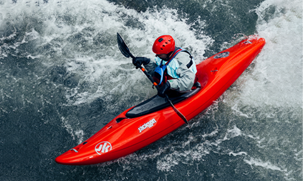
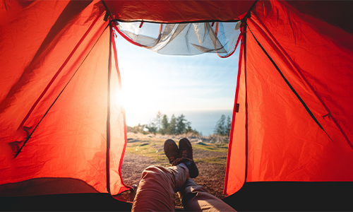
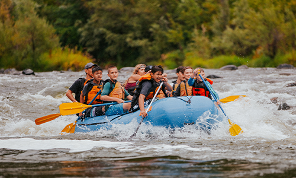
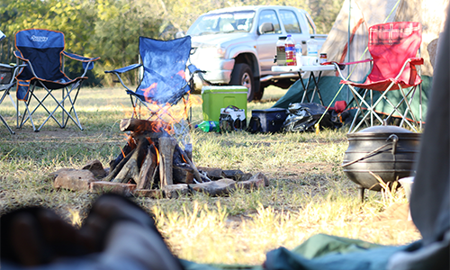

Here are some frequently asked questions about Exciting Expeditions!
New to whitewater rafting?
"Is whitewater rafting safe? I don't even know how to swim! Can I still come?"
As with all adventure sports, there is an inherent and assumed element of risk. To help ensure your safety, our guides are all certified in Wilderness First Aid and all start with at least 3 years of rafting experience. The most common injuries are sunburns and injuries that occur on land.
Everyone on commercial rafting trips wears coast guard approved life vest or personal flotation device (PFD). Many non swimmers go on rafting trips and have a great time. Your guide will give you an in depth and engaging safety talk before your trip begins explaining what you should prepare for and do in the event that you fall out of the raft.
"What's so great about whitewater rafting anyway?
Are you kidding me! What's not great about whitewater rafting!...Let's describe a common day on the river.
Arise in the soft light of the early morning after a night spent sleeping under a beautiful starry sky. Have a hearty warm breakfast of fresh blueberry pancakes or omelets to order, then pack your things and prepare for the day. The day is filled with some combination of swift water, rapids, calms, hikes, history, geology, stories, and more good food. We try to hit camp around 4 or 5, after setting up your cot you can relax with a good book or good company by the river, or explore around camp while your guides prepare your dinner...something perhaps like steak and potatoes, or grilled salmon...and dutch oven brownies...you won't forget the dutch oven brownies. After dinner it's more relaxing, and you might even be able to talk your guide into another story or two to send you off to bed under more stars than you thought were possible.
What to know before booking?
"How far in advanced should I book my trip?"
If you have specific dates you need, we recommend booking a year in advance. If you can be more flexible 6 months in advance is usually sufficient.
"Is this a good trip for kids? What are the age ranges you allow?
Absolutely this is a good trip for children of all ages. We have found however that children over the age of 8 seem to enjoy it more overall (And parents especially enjoy it more if their children are all over 8).
A common concern we get from parents is that their children will be bored stuck on a boat for hours at a time. Surprisingly we deal with very few bored children of any age. The areas we are rafting through are some of the most beautiful in the world, and you never know what you might see around any corner. Not to mention the rapids which keep things very interesting. Each boat also comes equipped with a guide. It has been proven that river guides are unable to go for very long at all without telling stories...some of which are even true!
Packing necessities
"What do I need to bring?"
The most effective way to plan for temperature and weather changes in the Canyon is to be prepared for both hot & dry and cold & wet.
- Rain jacket and rain pants - do not bring ponchos
- Quick dry shirts and shorts
- Long sleeve cotton shirt and pants - helps keep you cooler on hot days
- Button down shirts - provides more sun protection on the neck
- Light-weight cotton pants, nylon pants, or sarong
- Swim suits - swim trunks for men; swimsuits for women, or a quick dry underwear and sports bra as a base layer during the day (two piece swimsuits are convenient when changing or going ot the bathroom)
- Button down shirts - provides more sun protection on the neck
- Hat - large brim hat offers protection from the sun with a good quality strap
- Sunglasses with strap
- Socks - used for hiking and to protect your feet from the sun
- Shoes - if not used to hiking in these, bring a pait of shows you have hiked in before
- Camper wear - Bring something comfortable to wear around camp
- Cotton dresses, skirts, sarongs - all popular options
- Sleep wear - you might choose to sleep in your camp wear, or you might like to bring something comfortable to sleep in
- Water bottle
- Small day-pack for hikes
- Moisturizing lotion
- Headlamp or flashlight
- Waterproof sunscreen
- Lip balm
- Hygiene products - toothpaste, toothbrush, tissue, nail clippers, feminine hygiene products, extra eyeglasses or contacts, biodegradable soap and shampoo
- Optional items - gloves, fleece, jacket, towel, bandana, small pillow, camera equipment, book, watercolors, journal, and pen
"What is included in the trip?
We will provide all necessary camping equipment. This includes a sleeping bag, foam pad, waterproof duffle bag, small waterproof day bag, tent and a cot, eating utensils and camping chair.
We provide water and lemonade during the day. Coffee, tea, and hot chocolate are provided during the morning and evening hours. You may bring beer, liquor and soft drinks (in reasonable amounts, 2 cans per day). You may purchase these items either the night before the trip, or on your way to the put-in. Also provided are 3 meals per day, plus snacks.
